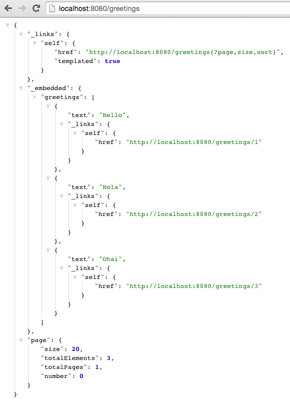

Estimated Time: 25 minutes
What You Will Learn
- How to use repositories for data access
- How to expose a REST API on top of those repositories
- How to use an embedded database for development
- How to use a production ready database in production
- How to gain access to the command line arguments and run specific code once
- How to control log levels
Exercises
Add an Embedded Database
1) Review the following file: $SPRING_BOOT_LABS_HOME/hello-spring-boot-rest/pom.xml. By adding the hsqldb dependency, we have added embedded database support for the hello-spring-boot-rest application. This helps us get started quickly in development, as we don’t have to provision a database.
<dependency>
<groupId>org.hsqldb</groupId>
<artifactId>hsqldb</artifactId>
<scope>runtime</scope>
</dependency>
Persistence With Spring Data JPA
1) Review the following file: $SPRING_BOOT_LABS_HOME/hello-spring-boot-rest/pom.xml. By adding the spring-boot-starter-data-jpa dependency, we have added Spring Data JPA support for the hello-spring-boot-rest application.
<dependency>
<groupId>org.springframework.boot</groupId>
<artifactId>spring-boot-starter-data-jpa</artifactId>
</dependency>
Implementing a data access layer of an application has been cumbersome for quite a while. Too much boilerplate code has to be written to execute simple queries as well as perform pagination, and auditing. Spring Data JPA aims to significantly improve the implementation of data access layers by reducing the effort to the amount that’s actually needed. As a developer you write your repository interfaces, including custom finder methods, and Spring will provide the implementation automatically.
To read more on Spring Data JPA go here.
2) Review the following file: $SPRING_BOOT_LABS_HOME/hello-spring-boot-rest/src/main/java/io/pivotal/hello/Greeting.java. This is a typical JPA domain (Entity) class. This class represents one row in our greeting table.
@Entity
public class Greeting {
@Id
private Integer id;
private String text;
public Greeting(Integer id, String text) {
super();
this.id = id;
this.text = text;
}
@Override
public String toString() {
return "Greeting [id=" + id + ", text=" + text + "]";
}
public Integer getId() {
return id;
}
public String getText() {
return text;
}
public Greeting() {
}
}
3) Review the following file: $SPRING_BOOT_LABS_HOME/hello-spring-boot-rest/src/main/java/io/pivotal/hello/GreetingRepository.java. This repository interface provides CRUD operations against the greeting table. All without the developer having to write any implementation!
public interface GreetingRepository extends JpaRepository<Greeting, Integer>{
}
4) Review the following file: $SPRING_BOOT_LABS_HOME/hello-spring-boot-rest/src/main/resources/application.yml. The spring.jpa.hibernate.ddl-auto setting controls how/if DDL changes are made. In this case, our application will update the schema if needed on startup. Read more on database initialization here.
spring:
jpa:
hibernate:
ddl-auto: update
Add a Restful API with Spring Data Rest
1) Review the following file: $SPRING_BOOT_LABS_HOME/hello-spring-boot-rest/pom.xml. By adding the spring-boot-starter-data-rest dependency, we have added REST support for our JPA repositories in the hello-spring-boot-rest application.
<dependency>
<groupId>org.springframework.boot</groupId>
<artifactId>spring-boot-starter-data-rest</artifactId>
</dependency>
The goal of the Spring Data REST project is to provide a solid foundation on which to expose CRUD operations to your repositories using plain HTTP REST semantics. Read more on Spring Data REST here.
For the GreetingRepository, Spring Data REST exposes a collection resource at /greetings. The path is derived from the uncapitalized, pluralized, simple class name of the domain class being managed. It also exposes an item resource for each of the items managed by the repository under the URI template /greetings/{id}.
We will explore the REST API, once we populate the database.
How to Run Code on Startup
In many cases, you need to run some code on startup. Spring Boot allows you capture the command line arguments and run code just as if you had implemented public static void main(String[] args) by implementing a CommandLineRunner bean.
CommandLineRunner is a core feature to Spring Boot so there are no dependencies that need to be explicitly added.
1) Review the following file: $SPRING_BOOT_LABS_HOME/hello-spring-boot-rest/src/main/java/io/pivotal/hello/HelloSpringBootApplication.java.
@SpringBootApplication
public class HelloSpringBootApplication {
Logger logger = LoggerFactory
.getLogger(HelloSpringBootApplication.class);
public static void main(String[] args) {
SpringApplication.run(HelloSpringBootApplication.class, args);
}
/**
*
* Loads the database on startup
*
* @param gr
* @return
*/
@Bean
CommandLineRunner loadDatabase(GreetingRepository gr) {
return args -> {
logger.debug("loading database..");
gr.save(new Greeting(1, "Hello"));
gr.save(new Greeting(2, "Hola"));
gr.save(new Greeting(3, "Ohai"));
logger.debug("record count: {}", gr.count());
gr.findAll().forEach(x -> logger.debug(x.toString()));
};
}
}
In this case, we are using a CommandLineRunner to populate the database with our GreetingRepository.
Turn Up Logging
To view the debug statements in the class we can turn up logging.
1) Review the following file: $SPRING_BOOT_LABS_HOME/hello-spring-boot-rest/src/main/resources/application.yml.
logging:
level:
io:
pivotal:DEBUG
Log levels can be ERROR, WARN, INFO, DEBUG or TRACE.
Simply specify the package/class in the logging.level key and set the desired level.
In this case, we have turned on DEBUG logging for everything in the io.pivotal package.
Run hello-spring-boot-rest
1) Open a terminal window.
$ cd $SPRING_BOOT_LABS_HOME/hello-spring-boot-rest
$ mvn clean spring-boot:run
2) View the logs in the terminal output. See the database being populated.
2015-10-06 13:42:27.350 DEBUG 65573 --- [lication.main()] i.p.hello.HelloSpringBootApplication : loading database..
2015-10-06 13:42:27.527 DEBUG 65573 --- [lication.main()] i.p.hello.HelloSpringBootApplication : record count: 3
2015-10-06 13:42:27.564 DEBUG 65573 --- [lication.main()] i.p.hello.HelloSpringBootApplication : Greeting [id=1, text=Hello]
2015-10-06 13:42:27.564 DEBUG 65573 --- [lication.main()] i.p.hello.HelloSpringBootApplication : Greeting [id=2, text=Hola]
2015-10-06 13:42:27.564 DEBUG 65573 --- [lication.main()] i.p.hello.HelloSpringBootApplication : Greeting [id=3, text=Ohai]
3) Browse to http://localhost:8080/greetings

Notice that not just data is returned but links on how to navigate the API. This is provided by Spring HATEOAS as opposed to establishing a contract up front or use of documentation. Read more on HATEOAS.
4) Experiment with paging and sorting
- Sort by text in ascending order: http://localhost:8080/greetings?sort=text,asc
- Sort by text in decending order: http://localhost:8080/greetings?sort=text,desc
- Get page 0, size 1: http://localhost:8080/greetings?size=1&page=0
- Get page 1, size 1: http://localhost:8080/greetings?size=1&page=1
5) Stop the hello-spring-boot-rest application.
What Just Happened?
When running locally Spring Boot will use the embedded database (hsqldb) and create the DataSource (how to connect to the database) for you.
The purpose of this lab is to set the stage to deploying your application to cloud foundry, which is the topic of the next lab.